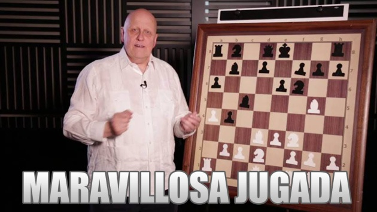

Welcome to the world of chess
José Raúl Capablanca

José Raúl Capablanca y Graupera (1888-1942) fue un ajedrecista cubano, campeón mundial de ajedrez de 1921 a 1927. Conocido como "El Mozart del Ajedrez" por su talento precoz, Capablanca aprendió a jugar observando a su padre. Su estilo de juego era famoso por su simplicidad y precisión.
Anatoli Kárpov

Anatoli Yevgénevich Kárpov (nacido en 1951) es un gran maestro de ajedrez ruso y fue campeón mundial de ajedrez de 1975 a 1985 y de 1993 a 1999 en la versión de la FIDE. Kárpov es conocido por su estilo posicional y su capacidad para explotar pequeñas ventajas.
Garri Kaspárov

Garri Kímovich Kaspárov (nacido en 1963) es un gran maestro de ajedrez ruso y fue campeón mundial de ajedrez de 1985 a 2000. Kaspárov es famoso por su estilo agresivo y su profundo conocimiento teórico. También es conocido por su rivalidad con Kárpov y por su trabajo en política y activismo.
Magnus Carlsen

Sven Magnus Øen Carlsen (nacido en 1990) es un gran maestro de ajedrez noruego y ha sido campeón mundial de ajedrez desde 2013. Carlsen es conocido por su versatilidad y su capacidad para jugar en una amplia variedad de estilos. Ha sido el número uno del mundo en el ranking de la FIDE durante muchos años.
Leontxo García
Leontxo García Olasagasti (nacido en 1956) es un periodista, conferenciante y comentarista de ajedrez español. García es conocido por su trabajo en la difusión del ajedrez a través de sus artículos, libros y programas de radio y televisión. Ha sido una figura clave en la popularización del ajedrez en el mundo hispanohablante.
Mates simples
Mate de torre y rey